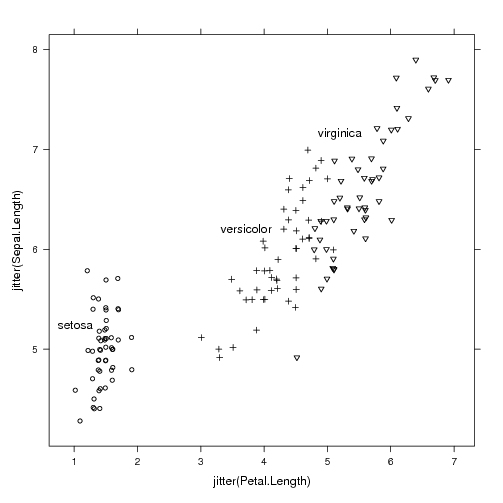
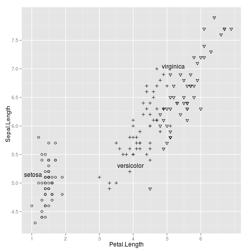
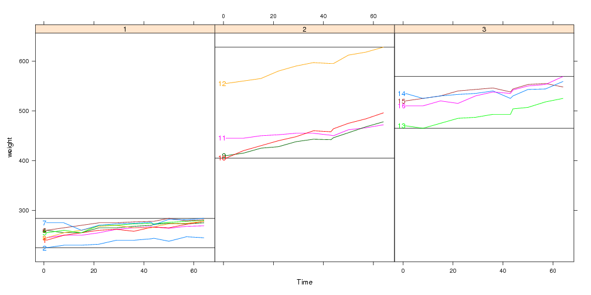
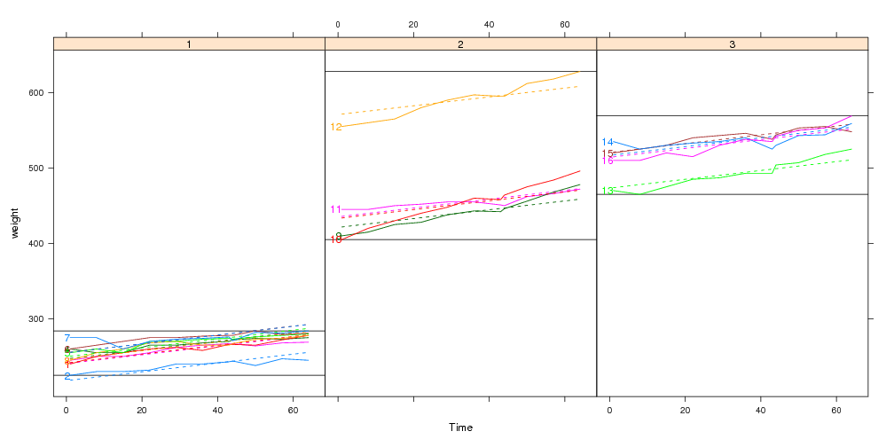
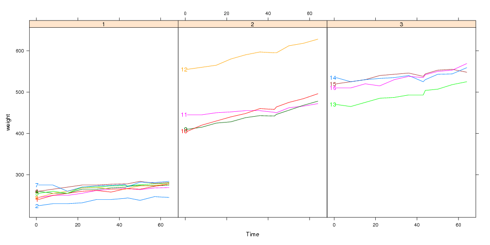

Normally sensible default label positions are chosen for you automatically when you call direct.label(p) with a plot p. But what if you don't like the defaults? For individual plots you can always specify a particular Positioning Function f by using the second argument: direct.label(p,f).
But what if you consistently think that the default choice is bad, and you would like to redefine it once and for all? You can define a custom function that chooses the default direct label positions, in the following manner. Put the following code in your ~/.Rprofile, and edit it to reflect your desired defaults for lattice and/or ggplot2 plots:
options(
directlabels.defaultpf.trellis=function(lattice.fun.name,groups,type,...){
ldefault <- if(nlevels(groups)==2)"lines2" else "maxvar.points"
switch(lattice.fun.name,
dotplot=ldefault,
xyplot=switch(type,p="smart.grid",ldefault),
densityplot="top.points",
qqmath=ldefault,
rug="rug.mean",
stop("No default direct label placement method for '",
lattice.fun.name,"'.\nPlease specify method."))
},
directlabels.defaultpf.ggplot=function(geom,...){
switch(geom,
density="top.points",
line="maxvar.points",
point="empty.grid.2",
path="bottom.points",
stop("No default label placement for this type of ggplot."))
})
What if it makes sense to put a group label at more than one place for increased clarity? Then all you have to do is construct a Positioning Function that returns several rows for each group.
A special case: if you want to combine the output from several existing Positioning Functions, there is a shortcut function that can help! dl.combine is included in the directlabels package, and it works like this:
data(BodyWeight,package="nlme") library(lattice) P <- xyplot(weight~Time|Diet,BodyWeight,groups=Rat,type="l",layout=c(3,1)) library(directlabels) direct.label(P,dl.combine(first.points,last.qp))

See also: example(dl.combine)
library(lattice) trellis.par.set(standard.theme(color=FALSE)) p <- xyplot(jitter(Sepal.Length)~jitter(Petal.Length),iris,groups=Species) direct.label(p) |
library(ggplot2) ggplot(iris,aes(Petal.Length,Sepal.Length))+ geom_point(aes(shape=Species))+ geom_dl(aes(label=Species),method="smart.grid")+ scale_shape_manual(values=c(setosa=1,virginica=6,versicolor=3),guide="none") |
See also: example(geom_dl)
If you want to use a custom display in lattice panels, you need to write a custom panel or panel.groups function. For something you want to draw once for each panel, use a custom panel function, and for something that you want to draw for each group, use a custom panel.groups function. When you use a custom panel.groups function, you need to explicitly specify the Positioning Function for the direct labels. This series of examples should should illustrate how to effectively create custom direct labeled displays.
library(directlabels)
data(BodyWeight,package="nlme")
## Say we want to use a simple linear model to explain rat body weight:
fit <- lm(weight~Time+Diet+Rat,BodyWeight)
bw <- fortify(fit,BodyWeight)
## Custom panel function which highlights min and max values:
panel.range <- function(y,...){
panel.abline(h=range(y))
panel.superpose(y=y,...)
}
direct.label(xyplot(weight~Time|Diet,bw,groups=Rat,type="l",
layout=c(3,1),panel=panel.range))

## This panel.groups function will display the model fits:
panel.model <- function(x,subscripts,col.line,...){
panel.xyplot(x=x,subscripts=subscripts,col.line=col.line,...)
llines(x,bw[subscripts,".fitted"],col=col.line,lty=2)
}
x <- xyplot(weight~Time|Diet,bw,groups=Rat,type="l",layout=c(3,1),
panel=panel.superpose,panel.groups=panel.model)
direct.label(x,"first.points")

## Custom panel and panel.groups functions:
x <- xyplot(weight~Time|Diet,bw,groups=Rat,type="l",layout=c(3,1),
panel=panel.range,panel.groups=panel.model)
direct.label(x,"first.points")

The panel.superpose.dl function can be used in place of panel.superpose in your lattice plots. It behaves just like panel.superpose, but it intelligently adds direct labels. If you specify panel.groups as a character rather than a function, then we can guess a Positioning Function. If not, you can always specify a Positioning Function with the method= argument.
xyplot(weight~Time|Diet,bw,groups=Rat,type="l",layout=c(3,1),
panel=panel.superpose.dl,panel.groups="panel.xyplot")

Here we use a custom panel.groups function so the Positioning Function must be specified using the method= argument:
xyplot(weight~Time|Diet,bw,groups=Rat,type="l",layout=c(3,1),
panel=panel.superpose.dl,panel.groups=panel.model,method="first.points")
Since the input and output of a Positioning Function is the same sort of data frame, you can chain Positioning Functions together. To illustrate how this works, consider the following contrived example:
complicated <- list(dl.trans(x=x+1), ## shift every point to the right 1cm
gapply.fun(d[-2,]), ## delete the 2nd point of every group
rot=c(30,180)) ## rotate by alternately 30 and 180 degrees
direct.label(dotplot(VADeaths,type="o"),complicated)

When method is specified as a list, the arguments will be applied in sequence, starting from the data frame of all plotted points. In this example,
Several different labeling methods can be compared for any mix of ggplot2 and/or lattice plots.
library(directlabels)
library(reshape2)
dts <- cbind(male=mdeaths,female=fdeaths,time=1:length(mdeaths))
ddf <- melt(as.data.frame(dts),id="time")
names(ddf) <- c("time","sex","deaths")
plots <- list(lattice=
xyplot(deaths~time,ddf,groups=sex,type="l",xlim=c(-15,80)),
ggplot2=
qplot(time,deaths,data=ddf,colour=sex,geom="line")+xlim(-10,80))
dlcompare(plots,list("first.points","lines2"))

| Please send email to Toby Dylan Hocking if you are using directlabels or have ideas to contribute, thanks! |
| validate |